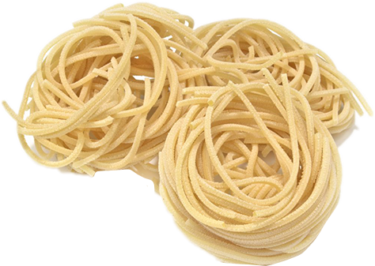

Spagett is the host of Channel 5's hidden camera show, Spooked by Spagett. He also does parties. He is well known for his marinara stains around his mouth, paynus and pep pep.
He first appears in the episode Dad's Off on his own hidden camera show in which he spooks two office workers at their weekly staff meeting. He next spooks Armando, a dishwasher, and later on he spooks Eric in the shower.
Spagett's secret recipe is now available for download. All pasta dishes come pre-sauced. If you would like some surprisingly delicious pasta for lunch, dinner, or even breakfast, order now and download into your face in just 30 minutes!